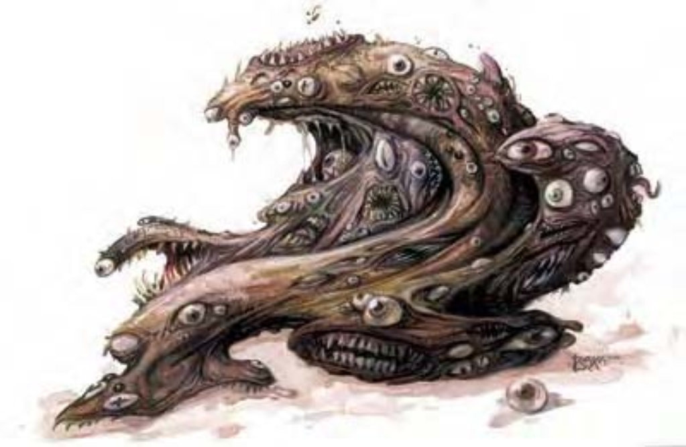

| 资料栏位 | 惧噬体 (Gibbering Mouther) 中型异怪 |
| 生命骰 | 4d8+24 (42HP) |
| 先攻 | +1 |
| 速度 | 10英尺 (2格)、游泳20英尺 |
| 防御等级 | 19 (+1敏捷、+8天生)、接触11、措手不及18 |
| 基本攻击/擒抱 | +3 / +3 |
| 攻击 | 啮咬+4近战 (1)；或吐涎+4远程接触 (1d4强酸附加目盲) |
| 全力攻击 | 6啮咬+4近战 (1) 及吐涎+4远程接触 (1d4强酸附加目盲) |
| 占据/触及 | 5英尺 / 5英尺 |
| 特殊攻击 | 喋喋不休、吐涎、精通抓擒抱、吸血、生吞、融解地面 |
| 特殊能力 | 不定形、伤害减免5/敲击、黑暗视觉60英尺 |
| 豁免 | 强韧+7、反射+4、意志+5 |
| 属性 | 力量10、敏捷13、体质22、智力4、感知13、魅力13 |
| 技能 | 聆听+4、侦察+9、游泳+8 |
| 专长 | 快速反射、武器娴熟 |
| 环境 | 地底 |
| 组织 | 单独 |
| 挑战级数 | 5 |
| 宝藏 | 无 |
| 阵营 | 通常绝对中立 |
| 进化 | 5-12HD (大型) |
| 等级修正值 | ― |
这种恶心的生物根本就像一只巨大而且不断变形的阿米巴原虫，体表的颜色和人类肌肤类似，但质地完全不同。惧噬体全身都有无数眼睛和满布利齿的嘴巴，位置并非固定，而是不断反复出现又消失。
惧噬体简直就像是从疯狂恶梦中爬出来的恐怖怪物。虽然生性并不邪恶，但嗜食生物体液，尤其是智能生物的血。
有时候惧噬体身上的嘴和眼会刚好排列成一张脸的样子，不过大部分情况下都只是无意义的排列组合。
惧噬体宽约3英尺，高3到4英尺，重量约200磅。
惧噬体通晓通用语，但通常快语喋喋不休，不知所云。
战斗惧噬体的攻击方式是伸出原生质伪足，末端形成一或两只眼睛及一张血盆大口用以啮咬敌人。惧噬体每轮最多可以伸出六只这样的伪足。
喋喋不休 (超自然)：一旦发觉附近有食物，惧噬体就会开始喋喋不休，启动此能力属于即时动作。60英尺扩散范围内的所有生物 (惧噬体除外) 都必须通过意志检定 (DC=13)，否则会受到如同“困惑术”效果的影响，持续时间1d2轮。此能力属于影响心灵的胁迫音波效果。通过豁免检定的生物在24小时内不会再受到同一个惧噬体的喋喋不休影响。豁免检定DC的调整值与魅力调整值相同。
吐涎 (特异)：惧噬体每轮可以喷出一串黏涎攻击30英尺内的一个敌人，属于即时动作。吐涎是远程接触攻击，如果命中则会造成1d4点强酸伤害，而且受害者必须通过强韧检定 (DC=18)，否则会陷入目盲1d4轮。没有眼睛的生物对目盲的效果免疫，但仍会受到强酸伤害。豁免检定DC的调整值与体质调整值相同。
精通擒抱 (特异)：当惧噬体啮咬到中型以下的对手时，即可利用即时动作进行啮咬攻击 (视为擒抱)，且不会引发对方借机攻击。
生吞 (特异)：如果对手的体型为中型以下，且被惧噬体啮住 (见前述“精通擒抱”)，则一旦惧噬体通过擒抱检定，就可将对方生吞下去。惧噬体并非将敌人吞入腹中，而是用柔软可变形的身体完全覆盖对手，但效果与“生存”能力完全相同。受害者一旦被生吞，就会遭到“吸血”攻击。只要能对惧噬体造成至少5点伤害，受害者就可以割开惧噬体而逃脱 (防御等级与正常攻击相同)。惧噬体的身体可容纳1个中型、2个小型、8个超小型或32个微型或128个超微型生物。
吸血 (特异)：被惧噬体生吞的生物每轮会自动受到1d4点体质伤害。
融解地面 (超自然)：惧噬体随时都可以融解邻接方格的岩石或泥土，使其变得松软，像流沙一样。启动此能力属于标准动作，但生效的时间视材质而有不同，融解泥土、沙质或类似地面需要1轮，岩石则需要2轮。除了惧噬体之外，其他处于流沙所在方格的生物都必须花费一个移动等效动作试图挣脱，否则就会被困住 (视同被压制)。
不定形 (特异)：惧噬体不会受到致命一击，也不会被夹击。
技能：因为有无数的眼睛，惧噬体在进行“侦察”检定时具有+4种族加值。惧噬体在进行任何特殊动作或闪身避祸时，“游泳”检定具有+8种族加值。即使分心或受困，他们在进行“游泳”检定时都可以随时取10。若以直线前进，则可在游泳时进行奔跑动作。